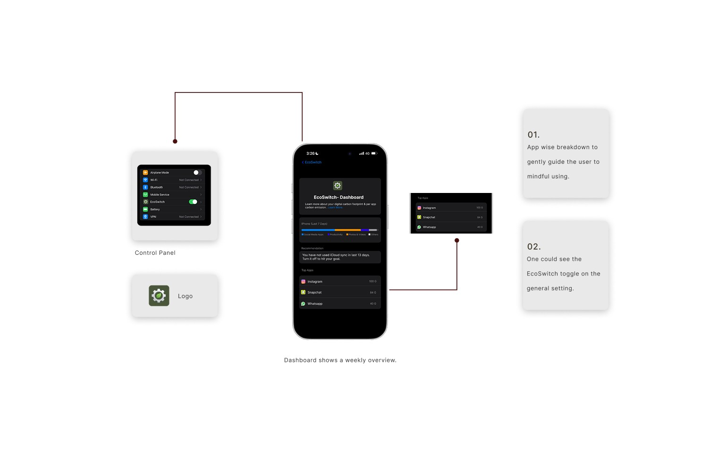
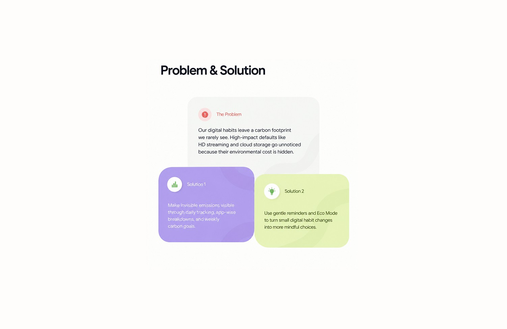
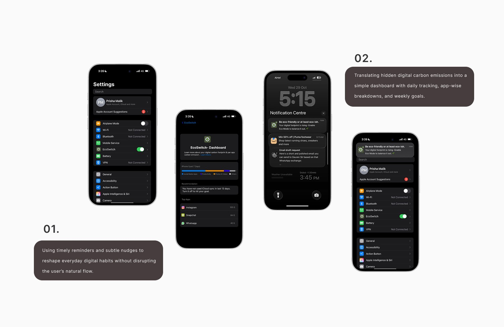

EcoSwitch
Designed a mode in given ios setting. The bar opens up to a dashboard that indicates total carbon footprint and personal achievements which help users to enjoy it instead of using it because of guilt.

The Invisible Impact of Everyday Habits
With the rapid growth of streaming platforms, cloud storage, social media, and constant internet usage, everyday digital activities contribute to hidden carbon emissions. These emissions come from energy-intensive data centers, network infrastructure, and device usage.
Despite this impact, most users remain unaware that their digital behavior contributes to environmental damage. This gap in awareness presents an opportunity to design tools that help users understand and reduce their digital carbon footprint.
What We're Solving
Most users are unaware that their everyday digital activities such as streaming in HD, storing unused files, or constantly running background apps generate carbon emissions. Because the impact is invisible and not communicated through existing interfaces, users rarely adjust their behavior or device settings to reduce energy consumption.
Designing Action Over Guilt
To design a digital feature that helps users understand, monitor, and reduce their digital carbon footprint by making energy usage visible, providing actionable insights, and encouraging more sustainable digital habits through reminders, eco-mode settings, and carbon tracking dashboards.
Process & Explorations
1. Understanding everyday digital habits
Initial research focused on how people use their phones daily, streaming videos, scrolling social media, and storing files. Conversations revealed that most users had never considered the environmental impact of these activities.
2. Translating awareness into a usable feature
Insights were translated into simple, familiar interactions such as a dashboard, weekly goals, and reminders. The aim was to make carbon impact visible without overwhelming users with technical data.
3. Designing small behavioral nudges
The final concept introduced Eco Mode, app-wise carbon tracking, and encouraging notifications to gently guide users toward more sustainable digital habits during everyday phone use.



What I Wanted to Understand
Awareness: How familiar are people with the idea of a digital carbon footprint?
Behaviour: Which everyday digital habits happen without much conscious thought?
Motivation: What might encourage people to make lower-impact choices?
Intervention: How can sustainability fit into existing digital routines without adding friction?
The Impact Is Hidden in the Habit
Many digital actions are shaped by convenience and default settings. Users may continue streaming in high quality, leave autoplay running, or accumulate cloud files without actively considering the environmental implications.
This led me to look beyond awareness alone. The opportunity was to connect everyday digital behaviour with its environmental impact at moments when users could realistically do something about it.
Major Learnings
- ✦ Sustainability needs to be visible to influence behavior.
- ✦ Small nudges can create meaningful change.
- ✦ Design can bridge awareness and action.